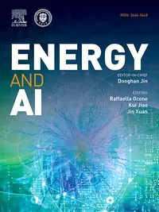
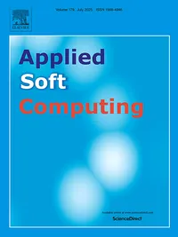
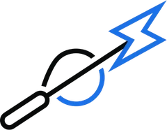

Research
Interests, publications and software
Interests, publications and software
Embedding trained machine learning models directly into optimization problems, as constraints or objective terms, so that components which are unknown, data-driven or too costly to evaluate can still be optimized over.
Forecasts that report what they do not know. I work on quantile neural networks, direct estimation of prediction intervals and conformal methods, looking for intervals that are sharp without giving up reliable coverage — and that stay useful once an optimizer consumes them.
Learned models are increasingly asked to inform decisions in a safety-critical system. I study what has to hold before that is reasonable: verifying behaviour rather than trusting average accuracy, and keeping the reasoning behind a result traceable and checkable.
Last updated: June 2026 • Google Scholar Profile



An LLM-orchestrated digital twin for uncertainty-aware power-system operations. A FastAPI backend exposes security assessment, N-1 contingency, probabilistic risk, robust corrective dispatch and flexibility studies as tools; a natural-language agent drives them from a chat interface, running on a hosted model or fully locally so that no grid data leaves the machine.